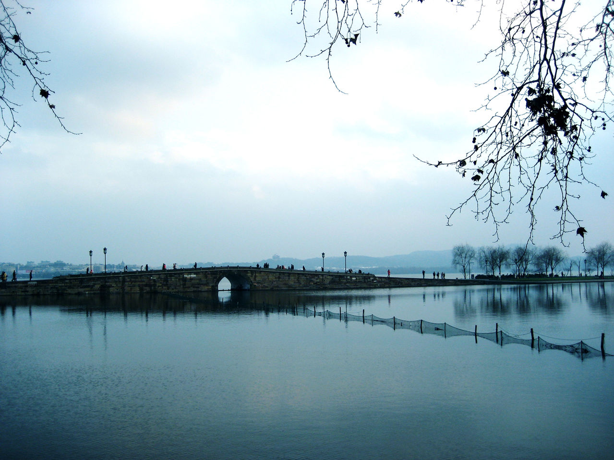

西湖旅游 · 人间天堂
欲把西湖比西子，淡妆浓抹总相宜

三潭印月
西湖十景之一，被誉为"西湖第一胜境"，是西湖中最大的岛屿，夜幕降临时三潭映月的美景堪称一绝。
苏堤春晓
西湖十景之首，由苏东坡主持修建，春日里桃花盛开，杨柳依依，漫步堤上如入画中。
雷峰夕照
以雷峰塔为核心景观，傍晚时分夕阳映照塔身，霞光满天，是西湖标志性的日落打卡地。

断桥残雪
西湖十景之一，冬雪初霁时，桥阳面冰雪消融，阴面仍有残雪，形成"断桥不断"的独特景观。
平湖秋月
临湖筑有御书楼，楼前平台挑出湖面，中秋之夜在此赏月，皓月当空，湖水如镜，景色绝佳。
曲院风荷
以夏日赏荷为主题，荷塘连片，清风拂过，荷香四溢，是西湖夏季最具代表性的景观。
西湖景点 · 记忆配对消消乐
翻转卡片，找到相同的西湖景点即可配对成功！
当前得分：0
游戏时长：0 秒
西湖十景 · 智能路线规划
选择你想去的景点，生成专属游览路线
选择游览景点
步行
骑行
你的专属游览路线
总距离：
0 km
预计耗时：
0 分钟
游览模式：
步行
选择景点后点击「生成路线」按钮
最多选择8个景点，系统将生成最优游览路线
小贴士：西湖十景分布在西湖周边，建议单次游览3-5个景点，步行速度约4km/h，骑行速度约10km/h。春季苏堤春晓、夏季曲院风荷、秋季平湖秋月、冬季断桥残雪为最佳观赏时节。